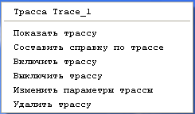

Тема №5. Устройство и эксплуатация цифровых систем телекоммуникаций.
Занятие №13. Порядок настройки первичного мультиплексора с блоком контроля. Программное обеспечение СуперТел-NMS.
Учебные вопросы:
Литература:
1. Назначение технические характеристики блока контроля КУ-S.
Блок КУ-S является базовым блоков в МП или КЦС и предназначен:
- для определения типов блоков, установленных в оборудование;
- для управления режимами работы оборудования и блоков по внутренней шине ТО;
- для передачи во внешнюю шину «RS485» и «LAN» информации о состоянии оборудования и блоков по протоколу SNMP.
Контроль состояния блока, управление режимами работы осуществляется по системе технического обслуживания (ТО):
- с помощью ПО «Супертел-NMS» с терминала сетевой системы управления;
- с помощью ПО «Супертел-LT» с локального терминала.
На лицевой панели блока КУ-S расположены:
- светодиод с индикацией:
- зеленый постоянно – нормальная работа,
- красный постоянно – авария в оборудовании,
- красный мигающий – предавария в оборудовании;
- кнопка СБРОС для восстановления работоспособности КУ-S;
- кнопка ИНД для проверки исправности индикации блоков; используется также для сброса сигнала звонка (сигнала аварии) с панели устройства ввода питания и сигнализации статива;
- разъем «LAN» (Fast Ethernet IEEE 802.3) - для подключения оборудования к ПК.
На разъеме «LAN» присутствуют два светодиода с индикацией:
- зеленый постоянно - наличие физического канала связи между двумя устройствами (LINK),
- желтый мигающий – индикация передачи пакета;
- разъем «RS232» - для подключения ПК для начального конфигурирования сети с помощью программы HyperTerminal;
- разъемы «RS485» - для подключения оборудования к системе ТО (разъемы равнозначны для подключения).
Контроль и сигнализация
Контроль работоспособности оборудования МП (ОВК) осуществляется с помощью индикации светодиода на лицевой панели КУ-S.
Красная постоянная индикация указывает на неисправность оборудования в следующих случаях:
- неисправность любого базового или дополнительного блока;
- пропадание сигнала Е1 или линейного сигнала при работе по линейному тракту- ЛТ;
- пропадание сигнала внешней синхронизации;
- пропадание цикловой или сверхцикловой синхронизации в первичном групповом сигнале;
- Кош сигнала Е1 или линейного сигнала > 1х10-3;
- наличие блока, не отвечающего на запрос управляющего блока.
Красная мигающая индикация указывает на предаварию оборудования в следующих случаях:
- Кош принимаемого сигнала Е1 или линейного сигнала > 1х10-6;
- прием извещения «Изв.1» или «Изв.2»;
- прием СИАС по входу принимаемого сигнала Е1 (или линейного сигнала) или нет сигнала с линейного блока на базовый блок при работе по линейному тракту.
Зеленая индикация указывает на нормальную работу.
Сигнализация осуществляется передачей сигналов «Авария», «Предавария» и «Звонок» с замкнутых контактов реле КУ-S через разъем СТАТИВ на задней панели корпуса оборудования с последующей трансляцией по цепям общестоечной сигнализации на внешнюю систему контроля – УВПС. Сигналы и контакты разъема СТАТИВ приведены в таблице 1.
| Наименование сигнала | Контакт разъема СТАТИВ | Состояние блока КУ-S и оборудования |
|---|---|---|
| Авария 1 | 1 | Неисправность оборудования - красная постоянная индикация на КУ-S |
| Авария 2 | 2 | |
| Предавария 1 | 3 | Предавария оборудования - красная мигающая индикация на КУ-S. |
| Предавария 2 | 4 | |
| Звонок 1 | 7 | Неисправность оборудования с соответствующей индикацией на КУ-S. |
| Звонок 2 | 8 | |
| Вызов статива 1 | 5 | Наличие сигнала «Вызов» с блока конференц-связи (КС) ТАИЦ. |
| Вызов статива 2 | 6 |
При подключении звонка к соответствующим контактам УВПС трансляция сигнала «Авария» или «Предавария» сопровождается звуковой сигнализацией на УВПС.
Кратковременное нажатие кнопки ИНД на КУ-S осуществляет размыкание контактов реле «Авария» («Предавария») и «Звонок», на УВПС происходит сброс сигналов «Авария» («Предавария») и «Звонок».
При наличии сигнала «Вызов», поступающего с блока КС на КУ-S, контакты реле «Вызов» блока КУ-S замыкаются.
При пропадании питания контакты реле «Авария» («Предавария»), «Звонок», «Вызов» разомкнуты.
Термины и определения
Каждый блок КУ-S содержит два сетевых интерфейса (СИ):
- Ethernet 10/100 (разъем «LAN»),
- ТЛМ 2400 бод (разъем «RS485»).
Соответственно для каждого СИ применимы понятия:
- MAC-адрес,
- IP-адрес,
- маска сети.
lan0 – идентификатор Ethernet интерфейса.
ppp0 – идентификатор ТЛМ интерфейса.
«Ближний» – обозначает блок КУ-S, который подключен к системе тех-нического контроля и обслуживания через разъем «LAN».
«Дальний» - обозначает блок КУ-S, который подключен к системе технического контроля и обслуживания через разъем «RS485»или через служебный канал управления (так называемые национальные биты «ТЛМ»).
Блок КУ-S, который осуществляет трансляцию команд управления си-стемы технического контроля и обслуживания из сети Ethernet в сеть ТЛМ и обратно называется «Шлюзом» или «Маршрутизатором».
Дополнительно данный КУ-S осуществляет управление/мониторинг канала «ТЛМ».
2. Применение программного обеспечения СуперТел-NMS.
Управление эксплуатацией синхронных мультиплексоров СМ-1/4(или СМ-1) и сетей связи, основанных на оборудовании СМ-1/4(СМ-1) и включающих иное оборудование, контроль технических характеристик и установка конфигураций и режимов работы осуществляется с помощью сетевой системы управления аппаратурой электросвязи (в дальнейшем сетевая система управления – Network Management System - NMS).
Сетевая система управления (NMS) состоит из компьютера с графическим интерфейсом пользователя, с выделенным (рекомендуется) или невыделенным сервером, из сетевых элементов (каждый из которых представляет собой 1 комплект оборудования – 1 систему приема/передачи), соединенных между собой линиями передачи через интерфейсы Ethernet или по каналам DCC, и программного обеспечения сетевой системы управления аппаратурой электросвязи «Супертел-NMS» (в дальнейшем - ПО «Супертел-NMS»).
NMS функционирует на двух уровнях:
- сетевой уровень – управление сетью;
- уровень сетевых элементов – управление сетевыми элементами.
NMS позволяет осуществлять следующие функции:
- управление допуском в NMS;
- редактирование сети связи;
- управление конфигурацией сетевых элементов;
- управление устранением неисправностей;
- контроль технических характеристик.
В руководстве оператора (в дальнейшем РО) представлено подробное изложение функций NMS, параметров и задач ПО «Супертел-NMS», а также пошаговое выполнение процедур по эксплуатации, управлению, техническому обслуживанию оборудования с помощью NMS.
| Задача | Цель/Содержание |
|---|---|
| Средства защиты |
|
| Редактирование сетей связи |
|
| Установка параметров блока ТТ-1 (СМ-1) |
|
| Установка параметров блока БКС-1 (СМ-1) |
|
| Установка параметров блока Т2 (СМ-1) |
|
| Установка параметров блока Т34 (СМ-1) |
|
| Установка параметров блока БС (СМ-1) |
|
| Установка параметров блока БСС (СМ1) |
|
| Установка параметров резервирования |
|
| Установка параметров МП |
|
| Установка параметров КЦС |
|
| Установка параметров РК |
|
| Установка параметров МКСС |
|
| Кроссировка сети |
|
| Контроль характеристик |
|
3. Порядок подготовки к работе блока КУ-S.
Перед тем, как приступить к работе, необходимо с помощью переключателей S1 и S2 на печатной плате блока КУ-S произвести начальные установки. Расположение переключателей S1 и S2 приведено на рисунке 1.
Рисунок 1.
Описание переключателей
S1.1 – резерв. Используется для запуска программы Утилита.
S1.2 – вывод ежесекундной статистики в консоли о загрузки процессора
S1.3 – установка типа изделия.
S1.4 – установка количества слотов в каркасе.
S1.5 – установка количества слотов в каркасе.
S1.6 – установка количества слотов в каркасе.
S1.7 – установка «заводских установок» для блоков передачи данных.
S1.8 – установка «заводских установок» для транспортной части программы.
S2.1 – включение канала передачи ppp0 по 1–му каналу ТЛМ («национальные биты»)
S2.2 – включение канала передачи ppp0 по 1–му каналу ТЛМ («национальные биты»)
S2.3 – включение канала передачи ppp0 по 2–му каналу ТЛМ («национальные биты»)
S2.4 – включение канала передачи ppp0 по 2–му каналу ТЛМ («национальные биты»)
S2.5 – резерв
S2.6 – резерв
S2.7 – резерв
S2.8 – включение работы консоли
| Количество слотов | S1.4 | S1.5 | S1.6 |
|---|---|---|---|
| 21 | Выкл | Выкл | Выкл |
| 23 | Выкл | Выкл | Вкл |
| 20 | Выкл | Вкл | Выкл |
| 6 | Выкл | Вкл | Вкл |
| 17 | Вкл | Выкл | Выкл |
| Резерв | Вкл | Выкл | Вкл |
| Резерв | Вкл | Вкл | Выкл |
| Резерв | Вкл | Вкл | Вкл |
| Тип изделия | S1.3 |
|---|---|
| МП | Выкл |
| КЦС | Вкл |
Установка переключателей.
- Переключатель S1
- установить переключатели S1.1, S1.2, S1.3, S1.4, S1.5, S1.6, S1.7, S1.8 – в положение OFF.
- Переключатель S2
- установить движками переключателя запись и прием канала ТО в линейном сигнале:
- S2.1, S2.2, S2.3, S2.4 – в положение ON. (в положении OFF – записи и приема канала ТО в линейном сигнале нет).
- установить переключатели S2.5, S2.6, S2.7 – в положение OFF.
- установить переключатель S2.8– в положение ON.
- установить движками переключателя запись и прием канала ТО в линейном сигнале:
- Сброс всех записей блока в начальные заводские установки
- установить переключатели S1.7 и S1.8 – в положение ON
- подать питание на КУ-S
- сделать паузу в 5-10 сек. т.е. дождаться полного запуска программного обеспечения БК.
- выключить питание
- установить переключатели S1.7 и S1.8 – в положение OFF.
- установить включение звуковой сигнализации при аварии оборудования – движок переключателя S2.8 перевести в положение «ON».
S1.7 – сброс всех проведенных коммутаций в блоках в положении ON
S1.8 – сброс всех IP – установок в положении ON
S2.8 – в положении ON/OFF разрешает/запрещает доступ к блоку с компьютера.
Описание интерфейсов и управления оборудованием.
Блок КУ-S функционирует с программным обеспечением (ПО) «Супертел-NMS», «Супертел-LT» (маркировка ППЗУ «SNMP v X.XX.XX (версия)»); (устанавливается только в оборудование КЦС), с ПО «СуперТел- ТМ» (маркировка ППЗУ «ТО v X.X (версия)»).
Подключение к системе ТО
- Подключение к сети по протоколу SNMP осуществляется:
- посредством интерфейса LAN для подключения блока к локальной сети:
- с помощью сетевого кабеля «Q-LAN-ETHERNET» («крестовой») - для
- соединения с ПК;
- с помощью сетевого кабеля «Q-ETHERNET» («прямой») - для соединения с устройством HUB;
- посредством интерфейса RS-232-C – с помощью кабеля «РС» ТАИЦ.685621.020 для начального конфигурирования блока;
- посредством интерфейса RS.485 - с помощью кабеля «RS.485» ТАИЦ.685621.020
- аналогичное оборудование соединяется друг с другом и подключается к одноименным розеткам блока.
- посредством интерфейса LAN для подключения блока к локальной сети:
- Подключение к сети «СуперТел-ТМ» осуществляется:
- посредством интерфейса RS-232-C - с помощью кабеля «РС» подключается рабочая станция - ПК;
- посредством интерфейса RS.485 - с помощью кабеля «RS.485» аналогичное оборудование соединяется друг с другом и подключается к одноименным розеткам блока.
Каждый КУ-S содержит два сетевых интерфейса:
- Ethernet 10/100 (разъём «LAN»),
- ТЛМ 2400 бод (разъём «RS485»).
Для работы блока КУ-S необходимо задать параметры:
- lan0 – идентификатор Ethernet интерфейса.
- ppp0 – идентификатор ТЛМ интерфейса.
Для каждого сетевого интерфейса (CИ) применимы понятия:
- MAC-адрес,
- IP-адрес,
- маска сети.
Подключение через СОМ-порт и ввод начальных установок
Первоначальное конфигурирование блока КУ-S производится с помощью терминальной программы (HyperTerminal или ZOC). Далее для простоты программу HyperTerminal или ZOC будем называть консоль.
Для конфигурирования блок КУ-S соединяется с ПК кабелем «РС» через разъем RS-232 и выбранным в консоли последовательным портом компьютера. Запускаем консоль и создаем новое подключение, выбирается порт СОМ(1,2,3…) к которому подключен блок КУ-S и настраиваются параметры выбранного порта.
Рисунок 2.
Параметры настроек последовательного порта в консоли:
- скорость 115200 бод,
- бит 8,
- без четности N,
- один стоповый бит,
- управление потоком Xon/Xoff.
Пример установки параметров последовательного порта программ Hyper Terminal или ZOC приведены на рисунке 3 и 4 соответственно.
Рисунок 3.
Рисунок 4.
После применения настроек появляется основное окно программы, нажав клавишу «Enter» отображается окно вспомогательной информации.
Рисунок 5.
Для каждой команды существует подсказка по ее формату, а также можно посмотреть текущие установки для данной команды, введя ее без параметров.
Пример вывода помощи и просмотр текущих значений для команды ROUTE приведен на рисунке 6.

Рисунок 6.
4. Установка опций в программе «Супертел».
Меню Сеть
Для редактирования (создания, добавления, удаления) сетевых элементов служит подменю Редактор сети в меню Сеть. (рисунке 7)
Рисунок 7.
Рисунок 8.
Далее в открывшемся окне Редактор сетевого элемента вводим IP-адрес СЭ {для СЭ №2 рис.8 вводим IP-адрес интерфейса LAN}. Выбор шрифта рус/лат. осуществляется в соответствии с подсказкой приведенной напротив каждого окна (рис.9).
Если СЭ является ближним можно поставить галочку в поле подключение к сетевому терминалу.
Рисунок 9.
После нажатия кнопки ввести соответствующий СЭ отображается в окне схема сети.
После нажатия кнопки ввести координаты соответствующий СЭ фиксируется в данной точке на экране. СЭ принадлежащие к одному узлу выделяются серым фоном.
Окно сетевого элемента
Для отображения СЭ и контроля состояния (работоспособности) входящих в СЭ блоков служит окно сетевого элемента. Это окно вызывается нажатием левой кнопки «мыши» на созданном СЭ {при нажатии на СЭ левой кнопкой мыши происходит считывание конфигурации СЭ и отображение входящих в него блоков и их состояния, для последующей корректной работы необходимо считать конфигурацию всех СЭ}, либо из меню узел выбором введенного узла в редакторе сетевого элемента и выбором подменю оборудование. Пример окна СЭ представлен на рисунке 10.
Рисунок 10.
В окне отображается: тип СЭ, название СЭ, принадлежность сети и узлу. Так же в этом окне отображаются блоки, входящие в состав СЭ, номера слотов в которых они установлены и состояние блоков при помощи индикаторов.
Нажатием на кнопку Конфигурация СЭ можно произвести считывание конфигурации блоков СЭ, либо загрузку ранее сохраненной в базе данных конфигурации. Нажав кнопку Параметры СЭ получаем информацию о типе оборудования, версии прошивки блока контроля (КУ-S) и версиях ПО. Кнопка сигнализация управляет звуковой сигнализацией на СЭ (на блоке КУ-S) и сигнализацией на разъеме «статив» (выход внешней сигнализации).
Окно блока
Для детального отображения состояния блока и его свойств-служит окно блока, которое можно открыть нажатием левой кнопки «мыши» на соответствующем блоке.
В окне блока КУ-S отображается его IP-адрес, номер слота в который блок установлен, тип блока и его версия.
Вид окна блока КУ-S для ПО «Супертел-NMS» приведен на рисунке 11.

Рисунок 11.
В правой части окна - окно управления блока. Здесь расположены кнопочные переключатели «Горячий/Холодный старт», ячейка «Сервер опроса» и кнопка-панелька «Таблица Опроса». Кнопка Ввести записывает выбранный режим в оборудование, кнопка Выход закрывает окно без применения параметров.
| Холодный старт» | Выбор «холодного старта» вызывает полный перезапуск оборудования с потерей и восстановлением кроссировок и режимов работы блоков, аналогичный включению/выключению питания |
|---|---|
| «Горячий старт» | Выбор «горячего старта» вызывает перезапуск блока КУ-S без потери кроссировок |
| Включение сервера опроса |
В режиме вкл. (выбираемом в таблице опроса) данный блок контроля опрашивает блоки контроля смежных СЭ, находящихся в данной сети управления. {Включать сервер опроса логично на ближнем СЭ для получения информации от дальних СЭ, включение сервера опроса и на дальних СЭ приведет к взаимному опросу и будет отнимать дополнительное время.} |
При нажатии на кнопку-панельку «Таблица опроса» открывается таблица, отображающая список сетевых элементов, которые находятся в сети управления и могут быть опрошены. Вид таблицы для нашего примера приведен на рисунке 12.
Рисунок 12.
В столбцах таблицы отображены:
- IP-номер - IP-номер сетевого элемента,
- ИМЯ - имя сетевого элемента,
- СОСТОЯНИЕ – состояние сетевого элемента для сервера опроса.
Для изменения состояния сетевого элемента необходимо щёлкнуть правой кнопкой «мыши» по строке, откроется меню выбора, приведенное на рисунке 13.
Рисунок 13а.
Рисунок 13б.
Если состояние блока не было указано, откроется меню рисунка 13а. Щёлкнув по команде ВКЛ, включаем сетевой элемент в список опроса, в столбце СОСТОЯНИЕ появляется запись ВКЛ, таким образом сетевой элемент включен для сервера опроса.
Если состояние блока было указано, откроется меню рисунка 13б.
Если состояние блока было указано, откроется меню рисунка 13б.Щёлкнув по команде ВЫКЛ, выключаем сетевой элемент из списка опроса, в столбце СОСТОЯНИЕ появляется запись ВЫКЛ, таким образом, сетевой элемент выключен для сервера опроса.
Щёлкнув по команде УДАЛИТЬ, удаляем сетевой элемент из таблицы опроса.
Окно редактора сетевых интерфейсов
Считав конфигурацию всех СЭ можно переходить к созданию сетевых интерфейсов.
Для этого в соответствии с проектом сети, следует создать сетевые интерфейсы для всех СЭ , т.е. прописать физические соединения между СЭ {электрическое/оптическое соединение}.
Для создания сетевых интерфейсов необходимо щелкнуть правой кнопкой мыши над выбранным СЭ, в диалоговом окне Схема сети и в появившемся окне выбрать пункт сетевые интерфейсы. Пример окна приведен на рисунке 14.
Рисунок 14.
После выбора пункта сетевые интерфейсы открывается окно Редактор Сетевых Интерфейсов как показано на рисунке 15.
Рисунок 15.
Форма окна Редактор Сетевых Интерфейсов общая для всех типов сетевых элементов. В таблице диалогового окна Редактор Сетевых Интерфейсов отображаются все сетевые интерфейсы данного сетевого элемента и параметры сетевых интерфейсов - тип интерфейса, номер слота, IP номер смежного сетевого элемента, номер порта интерфейса смежного сетевого элемента;
Редактор интерфейса (комбинированное окно), предназначенное для установки параметров сетевого интерфейса, выделено рамкой и более темным цветом фона;
тип интерфейса (кнопка): открывается меню выбора типа интерфейса, для каждого типа сетевых элементов представлены все возможные сетевые интерфейсы;
Сетевой Элемент (кнопка): открывается меню выбора интерфейса данного сетевого элемента, где указаны слот, блок, порт;
Сетевой Элемент смежный (кнопка): открывается каскадированное меню выбора IP-номера смежного сетевого элемента, интерфейса смежного сетевого элемента, где указаны слот, блок, порт;
Ввести в таблицу (кнопка): вводит параметры интерфейса в таблицу;
Удалить из таблицы (кнопка): удаляет параметры интерфейса из таблицы;
Ввести (кнопка): введённые данные будут внесены в базу данных.
Выход (кнопка): выход из окна Редактор Сетевых Интерфейсов без изменения данных.
Порядок создания трассы
Изображение сети, для нашего случая приведено на рисунке16. MP1-первичный мультиплексор (ближний), MP2, MP3 (дальние). {Основные блоки: блок контроля КУ-S, блок мультиплексора МК-8}.
Связь по Е1 (см. выше п.п.№ сетевые интерфейсы):
- MP1(МК8-порт1) ↔ MP2(МК8-порт1) и MP1(МК8-порт2) ↔ MP3(МК8-порт1).
Рисунок 16.
Диалоговое окно редактор Е0 трасс
Для проведения кроссировки потоков Е0 выберите в строке меню команду Кроссировка, щёлкните левой кнопкой мыши по команде, откроется подменю, как показано на рисунке 17.
Рисунок 17.
Выберите команду Е0 Кроссировка, в отрывшемся подменю выберите команду Редактор Е0 трасс и щёлкните левой кнопкой мыши по выбранной команде. Откроется диалоговое окно Редактор Е0 трасс, показанное на рисунке 18.
Рисунок 18.
Описание окна:
Название трассы (текстовое окно): вводится название трассы;
Тип (кнопка): выбор типа:
- источник,
- получатель;
Группа обслуживания (кнопка): выбор группы обслуживания;
Начало трассы (комбинированное окно):
Сетевой элемент (кнопка): выбор сетевого элемента начала трассы;
Слот, блок (кнопка): выбор слота и блока сетевого элемента начала трассы;
Канальный интервал (кнопка-панелька): отражает канальный интервал начала трассы, для блоков МП-1, МП-2.
Окончание трассы (комбинированное окно):
Сетевой элемент (кнопка): выбор сетевого элемента окончания трассы;
Слот, блок (кнопка): выбор слота и блока сетевого элемента окончания трассы;
Канальный интервал (кнопка-панелька): отражает канальный интервал окончания трассы, для блоков МП-1, МП-2, МП-4 открывает выбор канального интервала окончания трассы;
Создать трассу (кнопка): создает трассу в графическом интерфейсе и открывает окно блокнота, где прописаны параметры созданной трассы, пример представлен на рисунке 19.
Рисунок 19.
Ввести в базу данных (кнопка): вводит трассу в базу данных, при этом пропадает окно блокнота с параметрами трассы;
Выход (кнопка): выход из окна Редактор Е0 трасс в окно ТАБЛИЦА Е0 КРОССОВЫХ СОЕДИНЕНИЙ.
Создание трассы Е0
Для примера проложим трассу между блоками АК МР2 и МР3, с транзитом через МР1.ВНИМАНИЕ! Перед проведением кроссировки Е0 трасс:
- Следует прочесть конфигурацию всех блоков оборудования МП, через которые будут проходить трассы Е0. Для этого следует поочередно раскрыть (затем закрыть) Окно сетевого элемента {нажав на соответствующий СЭ левой кнопкой мыши} каждого СЭ;
- Количество канальных интервалов начала трассы и конца трассы должны быть одинаковыми.
Для создания трассы Е0 выберите в строке меню команду Кроссировка, щёлкните левой кнопкой мыши по команде, откроется подменю, как показано на рисунке 19. Выберите команду Е0 Кроссировка, в открывшемся подменю выберите команду Редактор Е0 трасс и щёлкните левой кнопкой мыши по выбранной команде. Откроется диалоговое окно Редактор Е0 трасс, показанное на рисунке 21.
В открывшемся окне должны быть произведены следующие действия:
- Присвоение метки трассе.
В текстовом окне Название трассы введите название (метку) трассы. Метка трассы может включать до 25 символов (буквы русского и английского алфавитов и цифры).
- Выбор типа трассы.
Нажмите кнопку Тип - выберите тип:
- источник,
- получатель.
Данная кнопка определяет принадлежность канала к источнику информации или к получателю информации.
- Выбор группы обслуживания.
Нажмите кнопку Группа обслуживания - откроется меню выбора группы обслуживания. Группа выбирается из списка доступных групп.
- Выбор начала трассы.
Для этого в комбинированном окне Начало трассы следует выбрать сетевой элемент, с которого начинается трасса, блок и слот сетевого элемента начала трассы, [канальный интервал начала трассы].
Нажмите кнопку Сетевой элемент - откроется меню выбора сетевого элемента начала трассы, выберите соответствующий СЭ.
Нажмите кнопку Слот, блок - откроется меню выбора слота и блока сетевого элемента начала трассы.
Выберите слот и блок сетевого элемента начала трассы.
Для блоков МП-1, МП-2 выберите канальный интервал.
- Выбор окончания трассы.
Для этого в комбинированном окне Окончание трассы следует выбрать сетевой элемент, в котором заканчивается трасса, блок и слот сетевого элемента окончания трассы.
Нажмите кнопку Сетевой элемент - откроется меню выбора сетевого элемента окончания трассы.
Нажмите кнопку Слот, блок - откроется меню выбора слота и блока сетевого элемента окончания трассы.
На панельке Канальный интервал - появится номер канального интервала окончания трассы.
Для блоков МП-1, МП-2 выберите канальный интервал.
- Создание трассы в графическом интерфейсе.
Нажмите кнопку Создать трассу. В открывшемся окне блокнота с записью параметров трассы проверьте трассу.
- Введение трассы в базу данных.
Нажмите кнопку Ввести в базу данных.
- Включение трассы.
Выделите в таблице Е0 кроссовых соединений требуемую трассу и щёлкните по ней правой кнопкой мыши. Откроется меню трассы Е0 (см. рисунок 20). Выберите команду Включить трассу - трасса будет включена.
Рисунок 20.
В столбцах таблицы приведены: названия трасс, количество КИ, названия сетевых элементов и блоков, номера слотов и портов начала трассы и окончания трассы, тип трассы, группа доступа, состояние трассы.
Данные в таблице можно выстраивать - в алфавитном порядке по названиям, по номерам. Для этого следует нажать на кнопку - название столбца таблицы.
Справка (кнопка): открывается меню создания справки:
- Выделить все Ctrl+a;
- Убрать выделение Ctrl+x;
- Создать справку;
Выход (кнопка): выход из окна ТАБЛИЦА Е0 КРОССОВЫХ СОЕДИНЕНИЙ.
Меню трассы Е0
Выделите в таблице Е0 кроссовых соединений интересующую вас трассу и щёлкните по ней правой кнопкой мыши. Откроется меню трассы Е0 (см. рисунок 23). В верхней строке приведено имя трассы, следом представлены команды:
Показать трассу – открывает окно СХЕМА СЕТИ, в котором ярко-зелёным цветом выделена трасса и сетевые элементы, через которые трасса проложена
Составить справку по трассе - составляет подробную справку по выбранной трассе;
Выключить трассу - выключает выбранную трассу;
Изменить параметры трассы - открывает окно Редактор параметров трассы Е0 (см. рисунок 21), в котором можно произвести изменение параметров трассы Е0 (изменить название трассы, категорию доступа, группу обслуживания);
Удалить трассу - удаляет выбранную трассу из таблицы.
Рисунок 21.